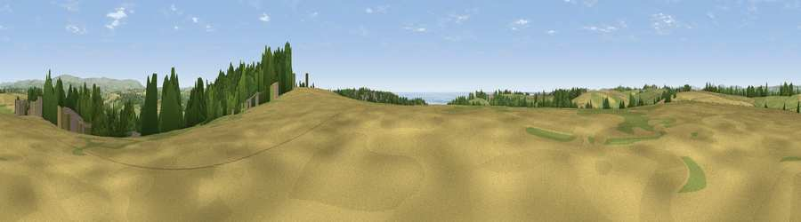

Viewpoint near Wembury
#8534 in England · top 18% of its area beats it · near WemburyThe view, rendered

A 360° render of this exact spot computed from the terrain model, tree cover and land cover — summer colours, afternoon light, calibrated against photographs of famous viewpoints. Real trees, hedges and buildings will differ in detail.
The panorama
Grey silhouette: terrain skyline in each direction (720 bearings, Earth curvature and refraction included). Dashed green: skyline with trees (+15 m) and buildings (+8 m) as obstacles. Blue strip: how far the ground is visible on each bearing.
Where the view opens
Wedge length = distance to the farthest visible ground on that bearing (vegetation-aware). Rings at 10, 25 and 50 km.
What fills the view
44% grassland · 25% cropland · 20% woodland · 6% water · 4% built-up
Angular shares of the visible panorama (visual magnitude), not map area. Landscape diversity 0.59 (0–1 Shannon).
Key numbers
More beautiful places nearby
The staircase of upgrades: each row has a higher view potential than everything closer. Driving times are estimates from straight-line distance, calibrated against real road routing — check an actual route before setting out.
| Place | Direction | Drive | Score |
|---|---|---|---|
| Viewpoint near Down Thomas | WSW · 3 km | ~6 min | 75.0 |
| Viewpoint near Newton Ferrers | S · 3 km | ~8 min | 78.2 |
| Viewpoint near Newton Ferrers | SE · 6 km | ~13 min | 79.5 |
| Viewpoint near Cawsand | W · 10 km | ~19 min | 81.0 |
| Viewpoint near Lee Moor | NNE · 12 km | ~23 min | 82.7 |
| Viewpoint near Downderry | W · 19 km | ~33 min | 83.5 |
| Viewpoint near Hope | SE · 20 km | ~33 min | 84.4 |
| Viewpoint near East Prawle | ESE · 28 km | ~45 min | 84.6 |
50.33668, -4.07489 · source: screening · position refined by local search. Computed location — check access rights before visiting.